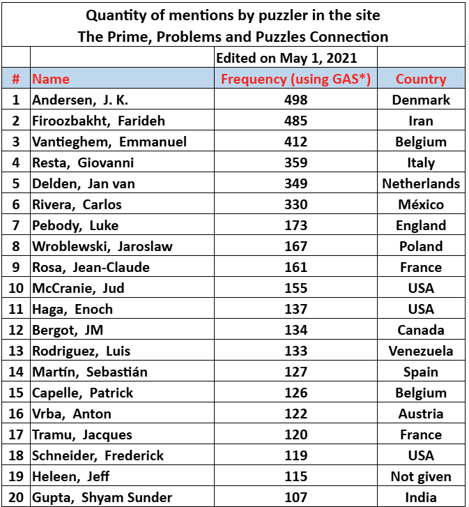
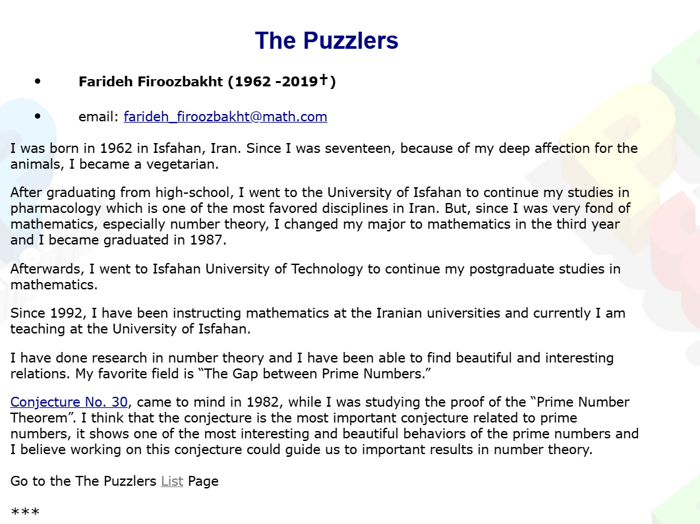

Farideh Firoozbakht and a Conjecture About Primes
She left almost no trace of herself — no photographs, barely a line of biography. What she left instead was one of the boldest unproven statements ever made about the prime numbers. The story of a pharmacy student from Isfahan who could not put the primes down.
 Amir Asghari
Amir Asghari
In memory of Farideh Firoozbakht, who would have preferred that we talk about the primes.
The story begins at the very beginning, when there was no one but God and God was still deciding whether or not to create human beings. He realised that, if humans were to be created, something else would have to be created too: something to stop them from becoming too self-important, something that would make them say, every now and then, “This one only God knows.” So God created the prime numbers.
Prime numbers
Suppose you have six square tiles and want to arrange them into a solid rectangle. You can make a row of six tiles, or two rows of three. But if you have seven tiles, then, surprisingly, there is only one rectangular arrangement: a single row of seven.
(2 × 3 and 1 × 6)
That makes it prime.
The same is true for five tiles, and for thirteen tiles. Numbers like these are called prime numbers. Looking at them a little more systematically, the first few are 2, 3, 5, 7, 11, and the next one I leave to you. For a small technical reason, 1 is not counted as a prime.
Now suppose someone asks whether, say, 386429 is prime. You have to go away and check. And if you ask whether there is some quick, revolutionary formula that tells you immediately whether any given number is prime, the answer is: that one only God knows — if, indeed, God knows.
That is why mathematicians’ eyes light up whenever prime numbers are mentioned. God had not counted on that part. Many wonderful stories in mathematics are built around a mathematician struggling with a problem about primes. One of the best known is Uncle Petros and Goldbach’s Conjecture, which has also been translated into Persian. Goldbach’s conjecture says that every even number greater than 2 can be written as the sum of two prime numbers. For example:
Why is it called a conjecture? Because nobody yet knows whether it is always true, or whether it merely happens to be true for all the even numbers we have checked so far.
Uncle Petros is a fictional mathematician, first presented as someone who does not really mix with people and who has buried himself in his studies — his studies being, of course, an attempt to prove Goldbach’s conjecture. Seen from outside, he seems mysterious. I know many mathematicians, but I have to admit that none of them reminds me of Uncle Petros as much as the mathematician I want to write about here: Farideh Firoozbakht.
The network of prime lovers
When a friend from Isfahan wrote to me, “Could you also research and write about women mathematicians — for example, Ms Firoozbakht?” I had no idea how hard it would be to write about a mathematician who was only five years older than me and who, sadly, died on 24 December 2019, at the age of fifty-eight.
There are only a handful of Persian links that mention her name, and most say no more than one sentence: Farideh Firoozbakht, Iranian mathematician and proposer of Firoozbakht’s conjecture on prime numbers, has died. That is all.
Thankfully, the English Wikipedia page adds a little more: that she was from Isfahan, that she first studied pharmacy and later mathematics, and that she became a professor of mathematics at the University of Isfahan. Still: that is almost all. No photograph, no substantial account of her life, almost nothing. If it were not for a few lines written by Firoozbakht herself, the story might have ended there.
Those lines lead to a website called primepuzzles.net, a site for prime lovers: people for whom prime numbers are not merely an object of study, but a way of life. Members share problems, solutions, ideas, and numerical curiosities. It is a small, compact site, still active, still publishing a weekly problem.
Why dwell on this site? Because Firoozbakht seems to have lived there, mathematically speaking. In a ranking published about a year and four months after her death, she was still second among its puzzle contributors. It is not hard to imagine that, before her death, she had been first.

Another daily ranking, based on numerical curiosities shared by members, still places her among the top ten. To get a feeling for the kind of curiosity involved, consider 1962, the year of Firoozbakht’s birth. It is not the sort of thing that occurs to most people that:
You have to live with numbers, in an Uncle Petros sort of way, to notice something like that. The site clearly mattered to Firoozbakht. She introduced herself there in her own words.

A small detail is that even there she avoided sending a photograph: the site asked for a biography and a photo; she sent only the biography. The essential point, however, is the date at which her conjecture first came to her: 1982, when she was twenty years old and in her second year as a pharmacy student.
Imagine being a second-year pharmacy student and spending your mornings and nights with prime numbers. Imagine, too, the worry this may have caused her family, and the thickness of skin it must have required from Farideh. I say this from experience. But the conjecture she discovered was astonishing enough to convince her that she had to leave pharmacy and study mathematics.
Firoozbakht’s conjecture
Recall the family of prime numbers: the first is 2, the second is 3, the third is 5, the fourth is 7, the fifth is 11, and the sixth I again leave to you.
Now take the square root of the second prime, 3. Then take the cube root of the third prime, 5. Then the fourth root of the fourth prime, 7. Then the fifth root of the fifth prime, 11, and so on. The number 2, being the first prime, can sit quietly in its corner for the moment. Firoozbakht’s conjecture says that these numbers keep getting smaller:
At first glance, one is tempted to say: surely that is obvious. Especially at the beginning, where 2 is greater than the square root of 3, we are quickly lulled into thinking that the rest must follow in the same way. But to see how remarkable the conjecture is, let us climb a little higher.
The number 113 is the 30th prime, and the next prime is 127. If Firoozbakht’s conjecture is true, we expect \( \sqrt[30]{113} > \sqrt[31]{127} \). And this is indeed true, since approximately:
This means that the 30th root of 113 is larger than all the 31st roots of the numbers from 114 up to 127. Seen from the point of view of the 30th root of 113, the story becomes more dramatic. Suppose you are trying to beat it using 31st roots. You begin with the 31st root of 114: not enough. Then 115: still not enough. The 31st roots keep getting larger, but the 30th root of 113 is still stronger than all of them.
If Firoozbakht’s conjecture is true, this dominance continues up to the 31st root of 127. For the 31st root of 128, however, it is a matter of luck:
What luck for the 30th root of 113. It narrowly survives several more numbers, and we have to wait until the 31st root of 133 before it is finally beaten:
Looked at this way, it becomes clear why Firoozbakht wrote in her profile for Prime Puzzles that her favourite topic was the gaps between prime numbers. The larger the gap, the more one feels that the power of the earlier prime might run out before the next prime arrives. If the conjecture is ever to fail, it is likely to fail where such a gap is exceptionally large.
Do not trouble yourself
I hope that by now you have rushed to a calculator and checked Firoozbakht’s conjecture for a few numbers, just to get a better feeling for it. But if you are doing this in the hope of finding a counterexample, I should warn you: not likely. Mathematicians have already verified it for all primes up to:
If a counterexample exists, finding it is not a job for an ordinary computer. What is especially striking is that Farideh herself, at the age of twenty, checked her conjecture up to:
Think about what that means. We are talking about around forty years ago, when there was only one computer in the whole University of Isfahan. Farideh would have had to prepare her program on punched cards, all the while hoping that she had not made a single wrong hole on a single card. I can almost feel the shining eyes, the sudden drop of the heart from joy.
Who was Farideh Firoozbakht?
One of Firoozbakht’s colleagues at the Isfahan House of Mathematics wrote to me: “She did not pay much attention to her appearance and regarded anything other than research as pointless.” One of her students wrote: “She was in her own world.” Yet this person, so often in her own world, was naturally generous in sharing her feeling for mathematics with her students.
Farideh Firoozbakht did not want us to know more about her private life than she herself chose to share. I respect that wish, and so I end this story with the poem that appeared on her memorial notice. I do not know who chose it, but whoever it was could hardly have chosen better:
exile is when friends let you fade from memory. — from her memorial notice
And her story will continue
The following text was written, at my request, by Ian Stewart about Firoozbakht’s conjecture. I dedicate it to Farideh and to her students. She will live on in her conjecture, and she will never again be forgotten.
Firoozbakht’s Conjecture
Prime numbers are among the most important, but also the most puzzling, concepts in the whole of mathematics. Their definition is simple: a whole number is prime if it cannot be obtained by multiplying two smaller whole numbers together. For example, 5 is prime, but 6 = 2 × 3 is not. Prime numbers are basic to many areas of mathematics, both pure and applied. They form the basis of some of the codes used to ensure Internet security. They are puzzling because they do not follow any simple pattern — unlike, say, squares or powers of two.
On the other hand, primes are not merely random. Some patterns can be found. An obvious one is that every prime except 2 is an odd number. Every prime of the form \(4k + 1\) is a sum of two perfect squares; no prime of the form \(4k + 3\) is a sum of two perfect squares. There are also useful approximate formulas related to the distribution of primes: roughly how many primes occur in a given range of numbers. In 1792 the great mathematician Carl Friedrich Gauss noticed that the number of primes less than a given number \(x\) is approximately \(x / \log x\), that is, \(x\) divided by its natural logarithm. Proofs that this is correct were finally found in 1896 by Jacques Hadamard and Charles Jean de la Vallée Poussin, using advanced methods from complex analysis. One interpretation is that the size of the \(n\)th prime is roughly \(n \log n\).
The Iranian mathematician Farideh Firoozbakht is famous for a conjecture about the relation between the sizes of consecutive primes. It states that the \(n\)th root of the \(n\)th prime forms a strictly decreasing sequence. In symbols, if \(p_n\) is the \(n\)th prime, then
Using a table of the largest gaps between consecutive primes, Firoozbakht discovered that this inequality is true for all \(n\) up to 4,444,000,000,000. Later work by the mathematician Alexei Kourbatov has verified it up to 1.84 × 10¹⁹, but to date, no complete proof or disproof has been found.
Many similar conjectures have been proposed. Firoozbakht’s Conjecture is one of the strongest, placing closer limits on the distribution of primes than many others. Luan Alberto Ferreira and Hugo Luiz Mariano, surveying results implied by the conjecture, describe it as “the boldest (and reasonable) known statement about prime gaps.” They observe that its truth would imply the truth of many other famous conjectures about primes. Using a recent breakthrough on the gaps between consecutive primes by Yitang Zhang, it has also been proved that the sequence of \(n\)th roots of the \(n\)th prime decreases infinitely many times.
Firoozbakht’s mathematical legacy is an intriguing and important contribution to the centuries-long puzzle of the distribution of prime numbers. It poses a fascinating challenge for future mathematicians to solve. If it is true, many long-sought theorems will follow. If it is false, mathematicians will be led to develop new insights into the sizes of gaps between consecutive primes.
Among others
Ian Stewart points out that Firoozbakht’s conjecture is a bold one: if it turns out to be true, many other famous conjectures about primes will follow from it; and if it turns out to be false, it will open the way to new insights into the gaps between prime numbers. So let us end by looking at Firoozbakht among others.
Let us return to the example of 113. We said that 113 is the 30th prime, and the next prime is 127. So the actual gap between these two primes is
Now let us see what ceiling Firoozbakht’s conjecture puts on the next prime. The conjecture says that
and since
the next prime must appear before we reach about 132.
To say this in the language of gaps, write the gap between the \(n\)th prime and the next one as
So in this example \(g_{30}\) is the gap between the 30th prime and the 31st. Firoozbakht’s conjecture gives
In other words, the gap between the 30th and the 31st primes must be less than 19.286 — or, more simply, less than 20.
Now let us compare this with another famous conjecture: Andrica’s. It says that
Rearranging gives
and since
Andrica’s conjecture allows the next prime to go up to about 135. In the language of gaps, this gives
So even in this small example, Firoozbakht’s conjecture offers the smaller worst-case window for finding the next prime:
The next prime is in fact 127, and the actual gap is 14. Both conjectures are consistent with this example, but Firoozbakht makes the more optimistic prediction of where the next prime must appear.
This is why Firoozbakht’s conjecture is so strong. If this optimistic gap always works, then the less optimistic gaps work automatically too. That is why Firoozbakht’s conjecture implies conjectures such as Andrica’s, Legendre’s, Oppermann’s, and Brocard’s. Each of these, in its own language, says that the primes cannot drift too far apart; Firoozbakht’s is among the most optimistic and boldest of them all.
There are, of course, conjectures even more optimistic than Firoozbakht’s — the Nicholson and Farhadian conjectures among them. But the beauty of Firoozbakht’s conjecture is that it can be stated in very simple, almost school-level language, while still opening a rare window onto the complexity of the gaps between consecutive primes.
So whenever you come across a conjecture about the gaps between consecutive primes that looks rather complicated, you can always begin with one simple question: what does it predict for the gap between the 30th prime and the 31st?
Remember: the gap Firoozbakht predicts is less than 20.
References & further reading
- Firoozbakht’s conjecture. Wikipedia. en.wikipedia.org/wiki/Firoozbakht's_conjecture
- The Prime Puzzles & Problems Connection. primepuzzles.net
- Alexei Kourbatov (2015). Verification of the Firoozbakht conjecture for primes up to four quintillion. International Mathematical Forum.
- Alexei Kourbatov (2015). Upper bounds for prime gaps related to Firoozbakht’s conjecture. Journal of Integer Sequences, 18, Article 15.11.2.
- Luan Alberto Ferreira & Hugo Luiz Mariano (2018). Prime gaps and the Firoozbakht conjecture. São Paulo Journal of Mathematical Sciences.
- Matt Visser (2019). Verifying the Firoozbakht, Nicholson, and Farhadian conjectures up to the 81st maximal prime gap. Mathematics, 7(8), 691.
- Apostolos Doxiadis (2000). Uncle Petros and Goldbach’s Conjecture. Faber & Faber.